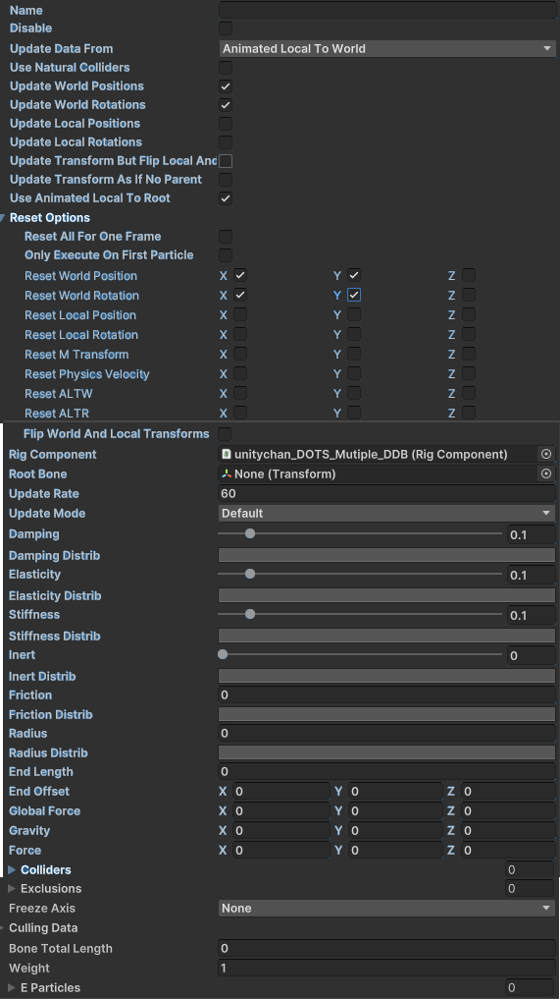
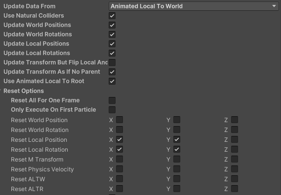
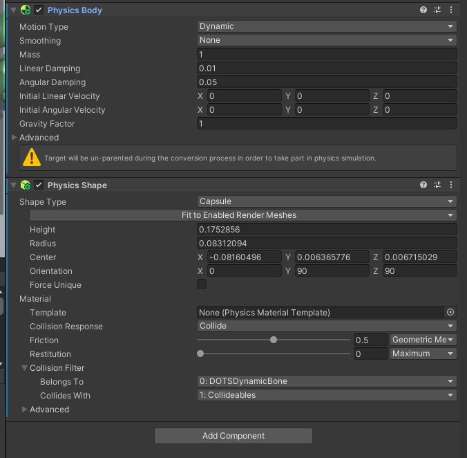
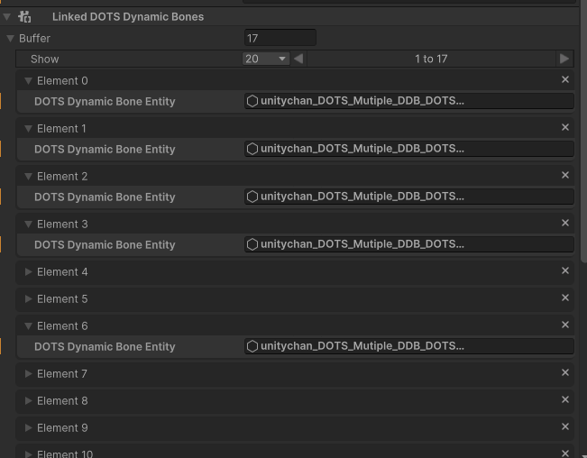

DOTS Dynamic Bone Component
The DOTSDynamicBone is a Monobehaviour is used to create a DOTSDynamicBone. The data it contains is used in the editor and during runtime. In terms of the Editor there are 2 Lists called eParticles (short for editor particles) and rParticles (short for runtime particles). eParticles are responsible for containing information used in both the Editor and at runtime during the baking process. rParticles are mainly used for debugging in the editor and will be visible if DOTSDYNAMICBONE_DEBUG is defined in the Compiling Systems.
NOTE: The information below will go over some fields and thier quirks, if a field is not listed below then please the Api Documentation for more info.
Configurations
Default
To get DOTS Dynamic Bone working all newly created DOTSDynamicBoneClasss are initialized with a Default configuration:

This should be enough to get you started however, if your not using physics it is highly recommended to not set UpdateLocalPositions, UpdateLocationRotations, UseNaturalColliders, UpdateTransformsAsIfNoParent, & UpdateTransformButFlipLocalAndWorld to true. We will go over those settings later in the doc.
NOTE: For more information or if the image isn't loading please check the InitializeDefault function in DOTSDynamicBoneClass
Using Physics
if you plan on using physics then there are a few things you must know. First is how to setup the Transform update boolean parameters like below:
NOTE: Be sure to add the DOTSDYNAMICBONE_UNITY_PHYSICS compiler definition in your project.
NOTE: When using the PhysicsDebugDisplay, since DOTSDynamicBones executes after that system the drawn shapes will look like they are a frame behind.

NOTE: For more information or if the image isn't loading please check the InitializeDefault function in DOTSDynamicBoneClass
Then you have to make sure your Entity has a PhysicsShape|UnityEngine.Collider and a PhysicsBody|UnityEngine.RigidBody:

NOTE: besure your collision filter is setup so the colliders don't interact with each (or you can setup better colliders then me :) )
If there are any Entities that do not have Physics Components but is a child of the RootBone in DOTSDynamicBoneClass then you must add that Entity in the Exclusions List with ExcludeFromCollision enabled (otherwise things may break a bit). Please go to the Exclusions section for more information
Fields & Parameters
DOTS Dynamic Bones (List)
This list will contain all the DOTSDynamicBone data for the associated Entity. For each element in this list a new Entity with all the DOTSDynamicBone data will be recreated and linked to the associated Entity.

Name
The name field is used in both the editor and runtime. In the Editor it is used to differenciate between DOTSDynamicBoneClass data within a DOTSDynamicBoneComponent. During runtime the name of the entity is constructed in the folloing way:
authoring.name + "_DOTSDynamicBone_" + m_DOTSDynamicBone.Name
This was done to help ensure the uniqueness of names without using a uuid (though technically a entity with a duplicate name can occur if you name everything the same)
Update Data From
This field will almost always be set to AnimatedLocalToWorld but feel free to play around with it or add your own!
Transform Update Settings
This include the fields and descriptions:
- Use Natural Colliders - This is used when you want physics calculations to be enabled on each Particle
- Update World Positions - This should always be true. It tells the DOTSDynamicBoneVisualPhysicalOverrideSystem to update
LocalToWorldposition data. - Update World Rotations - This should always be true. It tells the DOTSDynamicBoneVisualPhysicalOverrideSystem to update
LocalToWorldrotation data. - Update Local Positions - This should be true if
UseNaturalCollidersis true. It tells the DOTSDynamicBoneVisualPhysicalOverrideSystem to updateLocalTransformposition data. - Update Local Rotations - This should be true if
UseNaturalCollidersis true. It tells the DOTSDynamicBoneVisualPhysicalOverrideSystem to updateLocalTransformrotation data. - Update Transform But Flip Local And World - In practice this should never be enabled. feel free to enable it and see what happens :)
- Update Transform As If No Parent - This should be true if
UseNaturalCollidersis true. This notifies systems that some Particles may be unparented and must adjust how they process thier data. - Used AnimatedLocalLocalToRoot - this is always true (see code for more info)
Reset Options
each bool3 is used in the DOTSDynamicBoneParticleResetSystem and each boolean value is setup as:
- x: true = reset.
- y: true = reset on every frame if true else only in one frame.
- z: true = execute only on root particle.
In pratice you if physics isn't enabled then you have:
ResetWorldPosition = new bool3(true,true,false);
ResetWorldRotation = new bool3(true,true,false);
otherwise you have:
ResetLocalPosition = new bool3(true,true,false);
ResetLocalRotation = new bool3(true,true,false);
Rig Component
The RigComponent field is associated with SkinnedMeshRenderers and such.
Root Bone
The Root Bone refers to Entity that will be used to create Particles from. The Entity will be the RootBone and the children of that Entity will be the Particles. Depending on your DOTSDynamicBoneClass settings you may create Particles with RootBoneLike values.
RootBoneLike = a Particle with a m_ParentParticleIndex < 0 && m_LastParentParticleIndex < 0
Colliders
If this list is not empty then the Particles generated from the DOTSDynamicBoneClass will only collide with Entities that contains the DOTSDynamicBoneCollider within this list.
Exclusions
This list holds information regarding which Entities will be excluded and how they will be excluded from calculations.
Exclude From Particle Creation
If this is set to true then the Entity will not have a particle created for it. You should set this to true if you don't plan on having the Entity being a part of the Particle Simulation later.
Exclude Children From Particle Creation
If this is set to true then the Entity's children will be excluded from Particle creation. You should set this to true if you don't plan on having the Entity being a part of the Particle Simulation later.
Disable Particle Physics
If this is set to true then After Initialization the Paticle will be excluded from Particle Simulation however, it can be renabled by setting Particle.m_ExcludeFromParticlePhysics to true.
Disable Children From Particle Physics
If this is set to true then After Initialization the Paticle's children will be excluded from Particle Simulation however, it can be renabled by setting Particle.m_ExcludeFromParticlePhysics to true.
Exclude From Collision
If this is set to true and UseNaturalColliders is set to true then Physics Collisions calculations will be skipped for the associated Entity.
Exclude Children From Collision
If this is set to true and UseNaturalColliders is set to true then Physics Collisions calculations will be skipped for the associated Entity's children.
For more information check out the API reference for DOTSDynamicBoneComponent